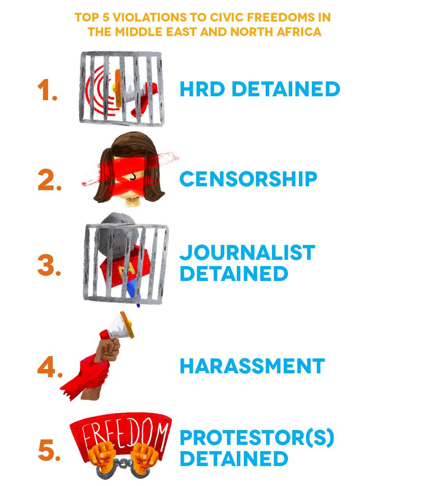
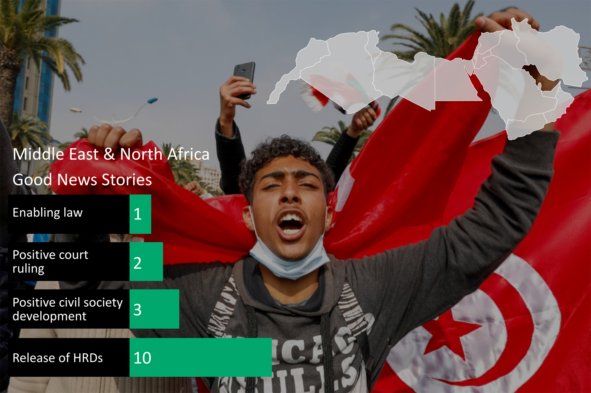

People Power Under Attack 2021 - Middle East & North Africa
Middle East & North Africa
The MENA region continues to be home to some of the most repressive regimes in the world, and no major improvements in civic space were documented during the reporting period. Out of 19 countries, civic space is rated as closed in nine, while six countries are rated as repressed and four rated as obstructed.
RATINGS OVERVIEW
In Tunisia, an ongoing political and economic crisis sparked a series of protests in January, which escalated in the following months with at least 975 protests being documented during July 2021 and 442 in August 2021. President Kaïs Saïed suspended parliament and centralised power in July 2021; since then the arbitrary use of travel bans has become a critical concern. The Palestinian-Israeli conflict escalated to its worst level in years in April and May 2021 after protests opposing evictions in East Jerusalem were met with teargas, stun grenades and rubber-coated steel bullets. Between 7 and 10 May 2021, around 1,000 Palestinians were injured, 735 by rubber bullets. In Lebanon, anti-lockdown protests in Tripoli, amidst a worsening economic crisis, were met with excessive force with about 200 protesters injured and one killed. Military intelligence officers were alleged to be forcibly disappearing people.
Syria continued to be one of the most dangerous places in the world for journalists, as indicated by the case of journalist Hussain Khattab, who was assassinated by unidentified masked gunmen. In Bahrain, prominent HRD and dual Danish-Bahraini citizen Abdul-Hadi Al-Khawaja marked the 10th anniversary of his arrest and subsequent life sentence in 2011, in relation to peaceful protests. In Kuwait, the authorities continued to violate the rights of the Bedoon community, a minority group denied citizenship, including by refusing to issue security cards to members of the community and harassing activists who advocate for the rights of Bedoon people, including activist Hadeel Buqrais. In the UAE, the country’s most prominent HRD, Ahmed Mansoor, remains in prison.
This picture is reinforced by CIVICUS Monitor ratings. Most ratings are unchanged, apart from a notable decline in Jordan, which is downgraded from obstructed to repressed. This comes after the dissolution of the Teachers Syndicate, one of the last remaining independent teachers’ unions in Jordan, and the closure of its headquarters for two years. Union members have faced harassment, intimidation and arbitrary detention by the authorities. In November 2021 the Governor of Amman banned the association from holding a press conference, thus violating the right to the freedom of expression.
Additionally, internet freedom has significantly declined in Jordan, with the authorities limiting access to information by blocking the internet, including social media, when there are politically sensitive developments. In March 2021, following the deaths of COVID-19 patients due to an oxygen shortage in a hospital, the authorities disrupted access to Facebook Live. Additionally, in April 2021, in the aftermath of the alleged coup attempt, a gagging order banned the media from reporting on these developments. A two-day internet shutdown was also carried out in parts of western Amman, with VPNs being cut during this time. Authorities have also blocked Clubhouse, an audio-only social media app, which is widely used by activists, public figures and critics to speak about political developments in Jordan.
Despite the gloomy picture, civil society in MENA continued to show remarkable resilience and solidarity in speaking out against violations. On the sidelines of the Dubai expo in October 2021, in order to highlight the contradiction of promoting a diversity of voices whilst UAE human rights defenders face trial and imprisonment for speaking their minds, civil society groups launched the Alternative Human Rights Expo. It sought to ‘counter the narrative of ‘tolerance’ and ‘openness’ that the UAE tried to claim, and draw attention to the repression still happening in the country.
CIVIC SPACE RESTRICTIONS
The five most reported violations in MENA during the reporting period were the detention of HRDs, censorship, detention of journalists, harassment and detention of protesters. These are largely unchanged from the 2020 report and highlight how commonly and widely states detain those they see as a threat.
DETENTION OF HUMAN RIGHTS DEFENDERS
The detention of HRDs was the most reported violation in MENA during the reporting period, having been reported in at least 11 out of 19 countries.
HRDs were detained for a range of reasons relating to their peaceful human rights work. In Egypt, Mohammed Basheer, Karim Ennarah and Gasser Abdel Razek, all senior management staff of the Egyptian Initiative for Personal Rights, were arrested and detained after the organisation held a meeting with European diplomats, including foreign ambassadors. In Iraq, internet activist Hussain Al-Shahmani, who is known for social media videos criticising poor public services, corruption and poor governance, was arrested and released after three days. In Palestine, the Israeli police embarked on a retaliatory campaign against prominent activists who protested against evictions in East Jerusalem, and arrested them in their homes. In Oman, Dr Ahmed Issa Qatan, an environmental rights defender, was arrested and sentenced to six months’ imprisonment because of his peaceful campaigning work to preserve the ecology of Dhofar Plain, which was under threat from housing development plans; three others, online activists Amer Muslim Bait Saeed and Salem Tabuk and poet Salem Ali Al-Maashani, were also arrested and detained over their peaceful opposition to the development.
In Tunisia, Slimane Bouhafs, an Algerian HRD and a refugee recognised by the UN Refugee Agency, was reportedly abducted and returned to Algeria where he faced undisclosed charges. His family later learnt through informal connections that he was in custody in a police station in Algiers. In Kuwait, poet Jamal Al-Sayer was arrested and detained for several days after a late-night raid on his house. He was later charged with insulting the Emir, Kuwait’s head of state, and publishing ‘fake news’ because of his poetry and writings on the internet denouncing corruption. In Iran, the authorities arrested financial reporter and labour activist Amir Abbas Azarmvand and detained him in Evin Prison in Tehran. He was charged with ‘propaganda against the state’.
CENSORSHIP
Censorship remained a major area of concern, documented in at least 11 out of 19 countries.
One form of censorship was internet shutdowns, as seen in Iran when the authorities closed down the internet after protests broke out in relation to reports that the Islamic Republic Revolutionary Guards had opened fire on a group of unarmed civilian fuel porters, killing at least 10 people, among them a child. In some countries, social media platforms were targeted for censorship, as in Oman where the Telecommunications Regulatory Authority of Oman banned the Clubhouse app on the basis that it had not been licensed by the Authority. In Jordan, the authorities disrupted access to Facebook Live following the oxygen shortages that led to deaths of COVID-19 patients. In Palestine, activists were censored on social media platforms, including Facebook, Instagram, Twitter and YouTube, with CSO groups accusing social media giants of ‘closely cooperating’ with the Israeli regime and its allies to censor Palestinian speech. In May 2021 alone, over 770 digital violations of content created by pro-Palestine users were recorded.
In other instances, censorship was introduced through legislative changes, as in Egypt, where the penal code was amended to impose a fine on anyone who photographs, records, excerpts, broadcasts, publishes or publicly displays the proceedings of a criminal court session, without the permission of the president of the court, and giving the court the right to confiscate devices used, erase their content or destroy them. The confiscation of devices and deletion of content was also a censorship tactic used in the UAE, as was seen when Ahmed Etoum, a Jordanian resident of the UAE, was sentenced to 10 years in prison followed by deportation, confiscation of his devices, deletion of incriminating posts and the shutdown of his social media accounts, in retaliation against his peaceful Facebook posts criticising the Jordanian government. In Lebanon, when Joseph Bejjani, a photographer working for the Lebanese army, was gunned down, his phone was also taken. According to media sources, Bejjani was one of the first photographers on the scene after the 2020 Beirut port explosion, raising speculation about the motive for his murder.
More blatant forms of censorship were seen in countries such as Iraq, where authorities, outrightly banned the muezzin and preacher of the Great Mosque in Kalakji sub-district from giving speeches, and also dismissed him from his job as a preacher, in retaliation against a Friday sermon that was critical of the Kurdistan Regional Government. In Tunisia, as President Saïed dismissed the prime minister and suspended parliament, police raided the Tunis headquarters of Al Jazeera TV, evicting its staff and temporarily closing down the office.
Additionally, the increasing use of surveillance technology across the MENA region is causing civil society groups and HRDs to engage in self-censorship for fear of being targeted by the authorities, with reports indicating that a staggering scale of surveillance of HRDs, journalists, bloggers and internet activists has been facilitated by Israeli NSO Group’s Pegasus spyware in recent years.
DETENTION OF JOURNALISTS
The detention of journalists was the third most documented violation, having been reported in at least nine out of 19 countries, as states used the criminal and legal systems to intimidate journalists and silence dissent.
In Palestine, at least 13 journalists were held administratively by the Israeli authorities in May 2021, after covering clashes between Palestinians and Israeli forces. In Yemen, security forces in Hadramaut Governorate arrested at least 17 people, including four journalists, Moataz Al-Naqib, Zakaria Mohammed, Hala Fouad Badawi and Yousra Al-Battati, for participating in a peaceful gathering to demand better living conditions and respect for public freedoms. In Egypt, Tawfik Ghanem, a retired journalist, was arrested and detained for alleged ‘membership of a terrorist group’, and was interrogated regarding his years working for news agency Anadolu and its coverage of the coup in which the military seized power in 2013.
In Tunisia, freelance photographer Islam Al-Hakiri was arrested while working at night and charged with breaking the curfew and assaulting a public servant, despite having a permit to be out after curfew. He was released on bail four days later. In Jordan, Jamal Haddad, publisher of the news website Alwakaai, was summoned by the National Security Prosecutor and detained after publishing an editorial which raised questions about government officials receiving the COVID-19 vaccine when it was not available to the public. In Iraq, security forces in Kirkuk Governorate detained five journalists who were covering security incidents in the village of Shaal, and only released them after more than two hours of interrogation. Other journalists were arbitrarily detained in Iraq, including Dalman Faraj Khanki, who was arrested because of his social media posts.
Positive Developments

Despite this generally bleak picture, there were some positive developments documented in the region, although few and far between. In Saudi Arabia, Ali al-Nimr, a man who was sentenced to death as a child for protest-related crimes, was released from prison by authorities after nine years. Al-Nimr was detained in 2012 at the age of 17 during anti-government protests by the kingdom’s Shia Muslim minority. He was found guilty of ‘breaking allegiance with the ruler’ and ‘repeating some chants against the state’ before being condemned to death by crucifixion and beheading, followed by the public display of his body in 2014. After his arrest in 2012, Saudi authorities refused to let his family visit him for four months, took nine months to present him before a judge, and did not inform his family of his first court hearing, 13 months later. He was also denied a lawyer during interrogations and initial trial hearings. Al-Nimr is the nephew of the prominent Shia cleric, Sheikh Nimr al-Nimr, who was a vocal supporter of the Arab Spring-inspired protests that took place in the Eastern Province in 2011, and who was later executed for terrorism offences by Saudi authorities in 2016.
Countries of concern: Iran, Saudi Arabia and UAE
This year’s analysis notes a growing concern over a trend increasingly being used by states to double down on malicious retaliation against HRDs who have completed their sentences, and HRDs who are currently serving sentences. States are abusing the criminal and legal systems to keep imprisoned HRDs in jail for longer, or to bring them back to prison after they have finished serving their sentences.
In Saudi Arabia, HRD Mohammad Abdullah Al-Otaibi was sentenced to another year in prison, in addition to a 2018 judgment that had sentenced him to 14 years for setting up a human rights organisation, the Union for Human Rights. In Iran, the authorities systematically used laws relating to the sanctity of religion, collaboration with foreign powers, espionage and threats to national security to target WHRDs, with the authorities abusing the legal system to continue the retaliation against those who have completed their sentences. Although Narges Mohammadi was released in October 2020 after serving five years and put under a travel ban, she was sentenced in May 2021 to an additional two and a half years in prison, 80 lashes and two separate fines, for her peaceful human rights activism. Similarly, British-Iranian citizen Nazanin Zaghari-Ratcliffe, who was released on house arrest in March 2020 after serving five years in prison, was sentenced to another year in prison and a one-year travel ban in relation to a protest in London 12 years ago and an interview with the BBC Persian service.
A similar trend was noted in the UAE where two women activists, Amina Al-Abdouli and Maryam Al-Balushi, remain in prison despite having completed their five-year sentences.